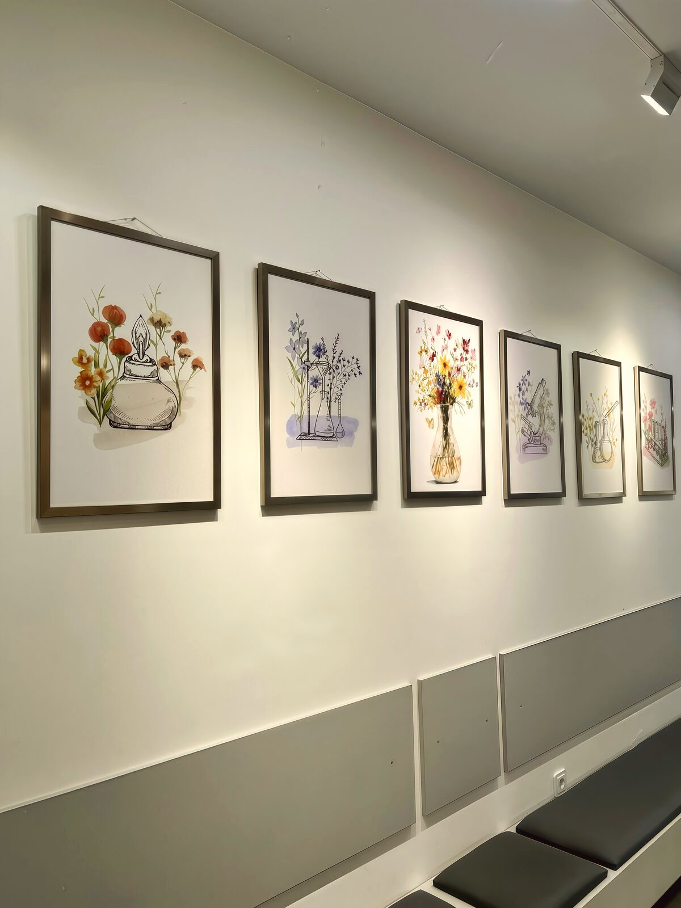
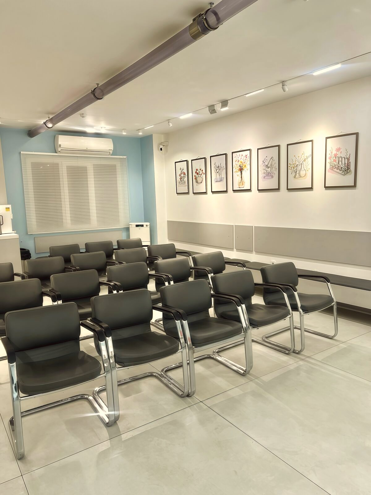
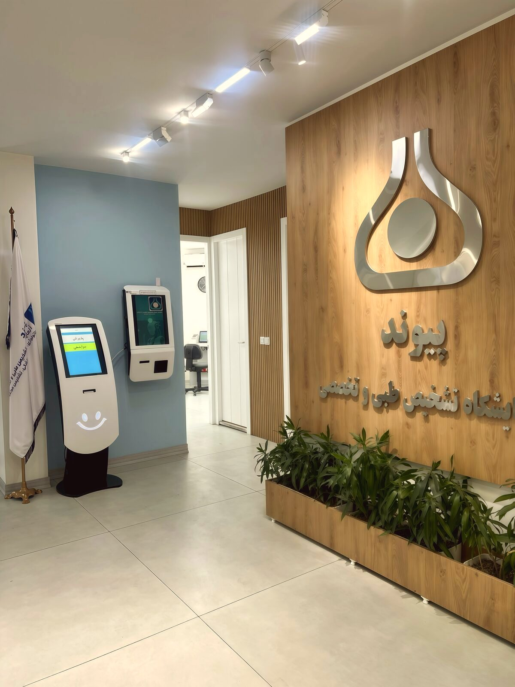
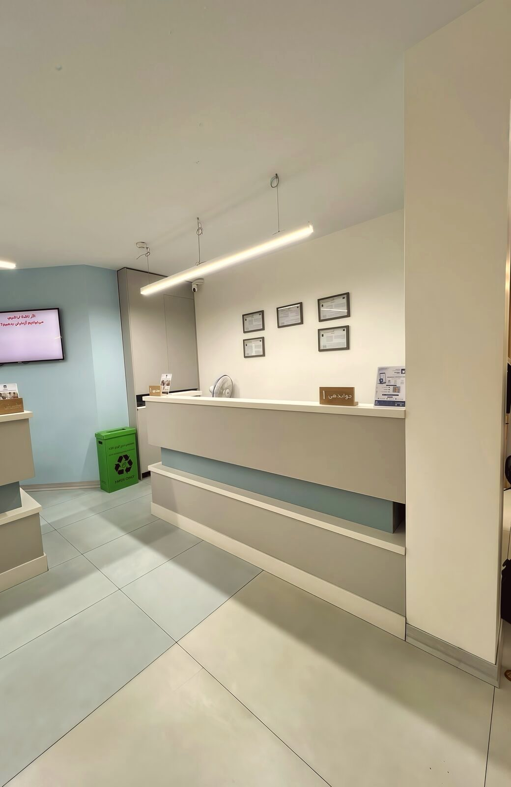
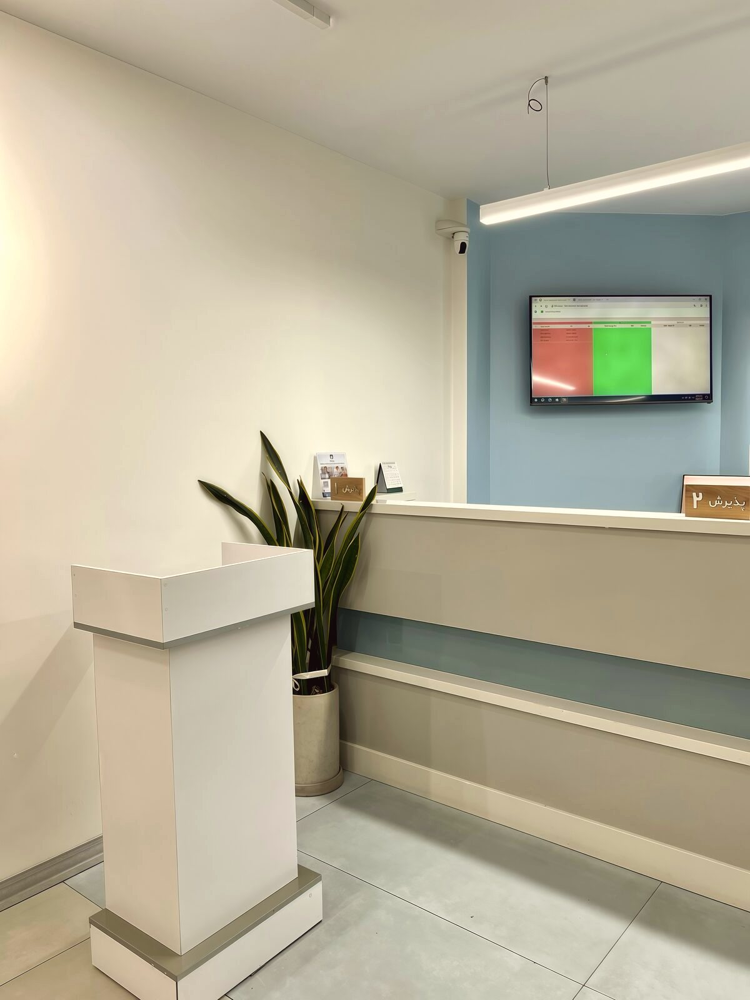
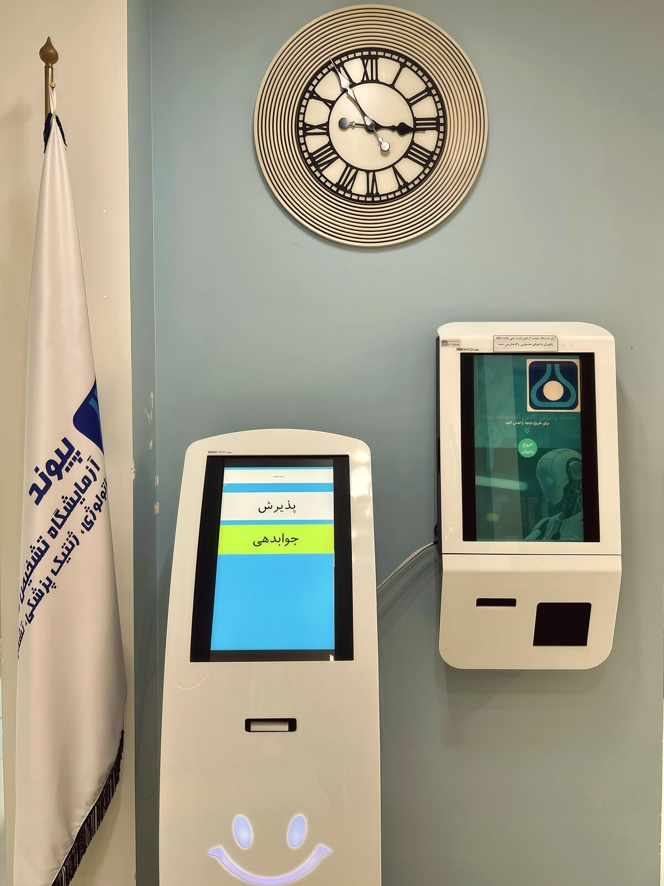

جواب آزمایش (اصلی)
مهمترین کار سایت؛ تنها بلوک پر سرمهای، بلندترین کنترل (۸۸ پیکسل) و درشتترین عنوان بعد از نام.
برگرفته از جهت «روشنا»: عکس پرنور خود آزمایشگاه اتاقی است که وارد آن میشوید، برگهای کاغذی همه محتوا را نگه میدارد و «جواب آزمایش» تنها بلوک پررنگ صفحه است. صفحه اول بالای همین برگه، زنده و ساخته از همین اجزاست.
تنها بلوک پر سرمهای و بلندترین کنترل هر صفحهای که در آن هست.
فقط هفت عکس خود آزمایشگاه، گرم و روشن؛ هیچ متنی مستقیم روی عکس نیست.
از گلهای تابلوهای سالن انتظار: نوبتدهی، برچسبها و نشانهها.
هر عددی که مراجع میخواند فارسی است؛ فقط کد رنگ و نام توکن لاتین.
سرمهای و فیروزهای نشان میمانند. گرما از خانواده گلبهی و سطح کاغذی میآید، خنکی از رنگ دیوار سالن انتظار. نسبتها اندازهگیری شدهاند (WCAG 2.2 AA: ۴٫۵ به ۱ متن، ۳ به ۱ نماد و متن درشت).
رنگها به اندازه سهمشان در یک صفحه: بیشتر کاغذ و سفید، گرمای کتانی و صورتی، خنکی دیوار؛ سرمهای و گلبهی تیره فقط برای کارها، فیروزهای فقط یک نشانه.
--pv-navy#003C7E
رنگ نشان پیوند. پر شدنش فقط در «جواب آزمایش»؛ جز آن، تیترها و پیوندها.
--pv-navy-hi#0A4E98
لبه بالای گرادیان «جواب آزمایش»، تا بلوک مثل یک دکمه واقعی نور بگیرد.
--pv-cyan#00C0F3
رنگ دوم نشان؛ فقط روی سرمهای (نماد جواب) و خط زیر صفحه فعلی. روی کاغذ متن نمیشود.
--pv-on-navy-2#CFE3F5
خط دوم «جواب آزمایش»؛ آرامتر از عنوان، باز هم خوانا.
--pv-rose-ink#8A2E44
رنگ گرم دوم، از گلهای تابلوهای سالن انتظار: برچسب ساعت و نشانی، نشان «امروز»، نوبتدهی زیر نشانگر.
--pv-rose#A8475B
زمینه «نوبتدهی آنلاین» با متن سفید، و نمادها و نقطههای گرم.
--pv-blush#F6E4DE
کاشی نمادها و نشانها؛ گرما بیآنکه بلوک پررنگ دومی ساخته شود.
--pv-blush-2#EFD3CB
برگه دوم کج پشت برگه اصلی در دسکتاپ؛ لبه برگه را از عکس شلوغ جدا میکند.
--pv-paper#FBF8F3
برگهای که همه محتوا روی آن است؛ گرم، تا کنار عکس گرم سرد نشود.
--pv-white#FFFFFF
کارتها و پلاکهای روی عکس؛ روشنترین سطح برای چیزی که باید جدا دیده شود.
--pv-linen#F3ECE3
بخش گرم صفحه و پاورقی؛ رنگ چوب روشن ورودی، بسیار کمرنگ.
--pv-wall#E4EEF4
بخش خنک صفحه؛ رنگ دیوار سالن انتظار. گرم و خنک کنار هم عمق میسازند.
--pv-ink#14243A
متن اصلی؛ سرمهای بسیار تیره بهجای سیاه، همخانواده نشان.
--pv-ink-2#3A4A5E
متن دوم: ساعت، نشانی، توضیح. برای چشم سالمندان هیچجا کمتر از ۷ به ۱.
--pv-ink-3#5B6878
فقط متن نمونه داخل خانه فرم؛ هیچ متن خواندنی دیگری.
یک خانواده، استعداد (Estedad، مجوز SIL OFL 1.1)، با وزنهای ۴۵۰ تا ۸۵۰. سلسلهمراتب با اندازه و وزن ساخته میشود، نه با قاب و رنگ.
Estedadوزن ۸۵۰، ۶۰۰ و ۵۰۰رقم فارسی
پیوند
--pv-fs-displayگوشی ۴۲، دسکتاپ ۶۴ پیکسل، وزن ۸۵۰
نام آزمایشگاه در برگه؛ بزرگترین حرف صفحه، تا نام لبها را پیش از هر چیز ببیند.
جواب آزمایش
--pv-fs-entryگوشی ۲۶، دسکتاپ ۳۴ پیکسل، وزن ۸۰۰
عنوان دکمه جواب؛ بعد از نام، درشتترین متن، چون مهمترین کار است.
راهنمای جوابدهی اینترنتی
--pv-fs-h1گوشی ۳۰، دسکتاپ ۴۴ پیکسل، وزن ۸۰۰
عنوان صفحههای داخلی.
پذیرش حضوری و غیرحضوری
--pv-fs-h2گوشی ۲۵، دسکتاپ ۳۲ پیکسل، وزن ۸۰۰
عنوان بخش.
ساعات کاری
--pv-fs-h3گوشی ۱۹، دسکتاپ ۲۱ پیکسل، وزن ۷۰۰
عنوان کارت و پرسش.
نام کاربری و رمز عبور هر دو روی قبض آزمایشگاه و در پیامک پذیرش آمده است.
--pv-fs-leadگوشی ۱۸، دسکتاپ ۱۹ پیکسل، وزن ۵۰۰
خط اول زیر عنوان صفحه.
پذیرش هم در خود آزمایشگاه انجام میشود و هم غیرحضوری، برای نمونهگیری در آزمایشگاه یا در منزل.
--pv-fs-bodyگوشی ۱۷، دسکتاپ ۱۸ پیکسل، وزن ۴۵۰
متن؛ ۱۷ پیکسل و فاصله خط ۱٫۸۵ تا همه سنها راحت بخوانند.
شنبه تا چهارشنبه ۰۶:۳۰ تا ۱۹:۰۰
--pv-fs-smallگوشی ۱۶، دسکتاپ ۱۶ پیکسل، وزن ۶۰۰
ساعت، نشانی و برچسب کنترلها؛ کمتر از ۱۶ نمیشود.
سالن انتظار
--pv-fs-captionگوشی ۱۵، دسکتاپ ۱۵ پیکسل، وزن ۶۵۰
کوچکترین متن سایت: عنوان عکس و نشان «امروز».
قاعده رقم: ساعت، تلفن، پلاک، شماره گام و اسلاید همه فارسیاند: ۰۲۱-۷۱۴۰۰۰۰۴، پلاک ۱۷۴، عکس ۱ از ۶. لاتین فقط برای کد رنگ، نام توکن و نام فایل.

عکس ۳ با درجهبندی «صبح» و نور پنجره
شش عکس از هفت عکس خود آزمایشگاه (عکس ۴ چهره دارد و به کار نمیرود). همه با یک درجهبندی «صبح» گرم شدهاند: قرمز ×۱٫۰۴، آبی ×۰٫۹۳۵، گامای ۰٫۹۶، سایهها کمی گلبهی، روشنیها کمی کرم؛ تا سالن خالی سرد دیده نشود.

کاربرد: اسلاید اول (عنوان مهدی: «اسلایدر»)
صفحه اول دسکتاپ: تمام صفحه، کانون ۵۰٪ ۳۱٪. گوشی: نوار ۴۲٪ ارتفاع صفحه، بزرگنمایی ۱٫۳ روی تابلوهای گل تا صندلی خالی کمتر دیده شود.

کاربرد: اسلاید دوم
دیوار چوبی و نوشته آزمایشگاه؛ کانون ۶۲٪ ۲۸٪، روی نشان.

کاربرد: اسلاید سوم؛ سرصفحه «جوابدهی»
برش بدون فرد (عرض ۱۰۴۰ از ۱۲۰۰)؛ تابلوی «جوابدهی» در کانون.

کاربرد: اسلاید چهارم؛ عکس کنار متن پذیرش
برش ۴ به ۳ با گوشه ۲۰؛ میز و گلدان در کانون.

کاربرد: اسلاید پنجم؛ عکس کنار نوبتدهی
دکمههای پذیرش و جوابدهی کیوسک خوانا میمانند.
کاربرد: اسلاید ششم؛ نوار بالای پاورقی
نوار ۱۸۰ (گوشی) و ۲۴۰ پیکسل (دسکتاپ)، محو در کتانی.
اسلایدر دسکتاپ تمام صفحه اول؛ گوشی نواری به بلندی ۴۲٪ صفحه (۲۸۰ تا ۳۸۰ پیکسل). سرصفحه ۱۶ به ۱۰ در گوشی و تمامعرض پشت برگه در دسکتاپ. عکس کنار متن ۴ به ۳. نوار پاورقی ۱۸۰ و ۲۴۰ پیکسل.
یک نور گرم پنجره از گوشه بالای شروع، و سایهای نرم پایین عکس تا لبه برگه بنشیند؛ هیچ پرده تیرهای روی عکس نیست.
متن هرگز مستقیم روی عکس نیست. عنوان عکس و کنترلها روی پلاک سفید یکپارچهاند؛ جوهر روی پلاک ۱۵٫۶۳ به ۱ است، روی هر شش عکس یکسان.
عکس کنار متن گوشه ۲۰ و سایه بالا دارد؛ عکس اول و سرصفحه بیقاباند و برگه کاغذی با برگه صورتی پشتش روی لبهشان مینشیند.
فاصلهها بر پایه ۴ پیکسل؛ گوشهها با اندازه چیز بزرگتر میشوند؛ سایهها گرماند، با رنگ سایه شرابی کمرنگ بهجای خاکستری.
--pv-s-1۴--pv-s-2۸--pv-s-3۱۲--pv-s-4۱۶--pv-s-5۲۰--pv-s-6۲۴--pv-s-7۳۲--pv-s-8۴۰--pv-s-9۵۶--pv-s-10۷۲--pv-s-11۹۶--pv-r-chip۸نشان و برچسب--pv-r-control۱۴دکمه و خانه فرم--pv-r-card۲۰کارت، عکس و جواب--pv-r-sheet۲۸برگه روی عکس--pv-r-pillکاملکپسول نوبتدهی و پلاک--pv-e-cardکارت روی کاغذ: خط مو، بیسایه--pv-e-raisedعکس کنار متن--pv-e-plaqueپلاک روی عکس--pv-e-sheetبرگه روی عکس: سایه بلند و گرم--pv-e-entryجواب آزمایش: نور بالا، سایه سرمهایهر حرکت به پرسشی از مراجع جواب میدهد؛ هر چیز به شیوه خودش حرکت میکند. با «حرکت کمتر» در سیستم، همه فوریاند و اسلایدر خودش جلو نمیرود. ساخته با Framer Motion.
| جزء | توکن | مقدار | به چه پرسشی جواب میدهد |
|---|---|---|---|
| فشار روی هر کنترل | M.press | فنر ۷۰۰ / ۳۸؛ کوچک شدن تا ۰٫۹۸ (جواب)، ۰٫۹۶ (دکمه)، ۰٫۹۹ (ردیف) | لمس من ثبت شد؟ |
| عکس اسلایدر | M.crossfade | فقط محو در هم، ۰٫۹ ثانیه، هر عکس ۶ ثانیه | عکس عوض شد؛ تصویر جابهجا نمیشود. |
| نشانگر جایگاه | M.dot | فنر ۵۲۰ / ۳۸؛ پهنای ۸ به ۲۸ و نوار پیشرفت گلبهی | کجای عکسها هستم و عکس بعدی کی میآید؟ |
| عنوان عکس | M.dissolveIn / Out | حل شدن در جای خود، ۰٫۲۲ و ۰٫۱۴ ثانیه | متن کوتاه، بیحرکت مکانی. |
| پرسش و پاسخ | M.disclose / M.chevron | ارتفاع با فنر ۲۶۰ / ۳۲؛ پیکان ۱۸۰ درجه با فنر ۴۰۰ / ۲۸ | پاسخ از زیر همان پرسش باز میشود. |
| منوی گوشی | M.drawer | کشو از راست با فنر ۳۲۰ / ۳۶؛ پرده ۰٫۲ ثانیه | منو از کجا آمد و به کجا برمیگردد. |
| پیوندیار | M.sheetUp / M.panel | گوشی: برگه از پایین، فنر ۳۰۰ / ۳۴. دسکتاپ: پنل از ۰٫۹۲، فنر ۳۸۰ / ۳۰ | فقط با زدن دکمه باز میشود، هرگز خودش. |
| پیکان جواب آزمایش | M.nudge | ۴ پیکسل به سمت رفتن، فنر ۵۰۰ / ۳۰ | این دکمه به جای دیگری میبرد. |
هر جزء همان جزء صفحههاست، ساخته از همین فایلها. اسلایدر، سربرگ صفحه اصلی و برگه بالای صفحه زندهاند؛ پاورقی پایین صفحه است.
مهمترین کار سایت؛ تنها بلوک پر سرمهای، بلندترین کنترل (۸۸ پیکسل) و درشتترین عنوان بعد از نام.
در سربرگ صفحههای داخلی و منوی گوشی؛ همان سرمهای، کوچکتر، تا راه جواب هیچجا گم نشود.
کار واقعی دوم، با خانواده گرم: کپسول پر گلبهی با متن سفید (۵٫۶۵ به ۱) و تقویم در دایره سفید. کوتاهتر و کوچکتر از جواب و هرگز تمامعرض؛ با تلفن که پیوند بیقاب است اشتباه نمیشود.
شماره خودش پیوند است: سرمهای با خط زیر و نماد در دایره آبی دیوار، بیقاب و بیزمینه؛ پس کنار نوبتدهی گرم و قابدار اشتباه نمیشود.
برچسب گلبهی تیره و متن ۱۷ پیکسل جوهر دوم (۸٫۵۴ به ۱) با ساعتهای پررنگ جوهر؛ هر نام خیابان یک تکه نشکستنی. در برگه صفحه اول، تلفن کنار نوبتدهی مینشیند.
کشو از راست؛ اول «جواب آزمایش»، بعد منو با صفحه فعلی پررنگ، پایینش ورود پزشکان و مراکز، پیوندیار و تلفن.
در صفحههای داخلی «جواب آزمایش» دوم در سربرگ میماند؛ در صفحه اصلی جایش در برگه است.
عکس واقعی همان بخش، با نور گرم پنجره؛ برگه کاغذی روی لبه عکس، مسیر صفحه و «جواب آزمایش» دوم.
متن کنار عکس واقعی؛ عکس ۴ به ۳ با گوشه کارت و عنوانی که میگوید کجاست.
ترتیب واقعی ورود به جواب؛ شمارهها فارسی، گام آخر نتیجه با تیک.
پرسشهای واقعی راهنمای جوابدهی؛ هر پرسش یک دکمه کامل، با کلیدهای بالا و پایین.
سه گروه ساعت از سایت فعلی؛ ردیف امروز با نشان گلبهی تیره.
پیامک پذیرش همانطور که میرسد؛ برچسب کنار هر خط میگوید کدام نام کاربری است و کدام رمز.
یک کار در هر ردیف: نماد، عنوان، یک خط توضیح و پیکان رفتن؛ ردیفی که جایی نمیبرد پیکان ندارد.
دکمه با برچسب در سربرگ، نه حباب شناور؛ پس روی هیچ کاری نمینشیند و هرگز خودش باز نمیشود.
این پیوندها همین برگه را در حالتهای دیگر باز میکنند.